Know Your Audience
The Value of UX through Rapid Iteration
The Challenge
Delivering 1st-Party audiences to Facebook and Google was identified as an opportunity to increase revenue. As an organization, we needed to solve how we productize this new SaaS offering and get it to market quickly.
Role
As Sr. UX Researcher, I was tasked with leading the research and design efforts for both internal and external users.
Un Understand
Hack-a-thon
In early October of 2021, the Software Engineering Team participated in a week-long Hack-a-thon to assess what could be done to enhance our legacy audiences. I was asked to provide some mock-ups in advance of the hack-a-thon for the front-end developer.
With very little information to go on, I opted for very low fidelity. I created mock-ups for both legacy and new tools using Whimsical. It was my first time using this tool, which provides just enough detail to start conversations.
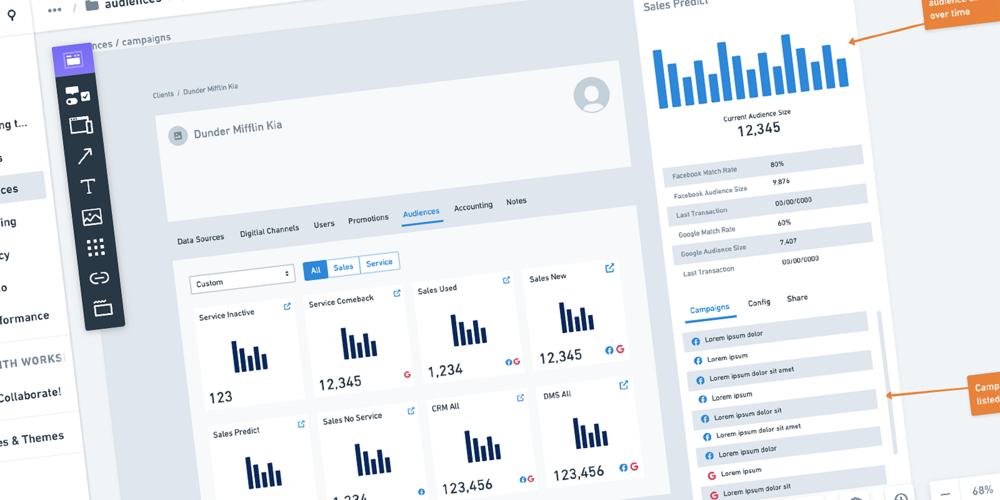
My initial thought was to add an "Audiences" tab on the Clients page. However, during the Hack-a-thon, it was decided that audiences would be delivered to each channel (Facebook, Google, Bing, etc) independently. I didn’t like the thought of having 10-12 audiences multiplied by the number of channels on the screen… so I changed direction after the Hack-a-thon.
US User Story
Collaboration vs. Iteration
Should user stories be written based on designs… or designs based on user stories? I hope the answer is obvious. This is a common theme I’ve seen throughout my career in UX. I believe UX and Product should be collaborating early and often to avoid multiple hand-offs. But in this particular case, a user story was created… a design(s) was created… and additional user stories would come later (based on the design). I would like iterations to take place between UX and users, not UX and Product.
Below is the user story I was assigned in late December, 2021. Highlighted in yellow are the requirements I wanted to validate with users.
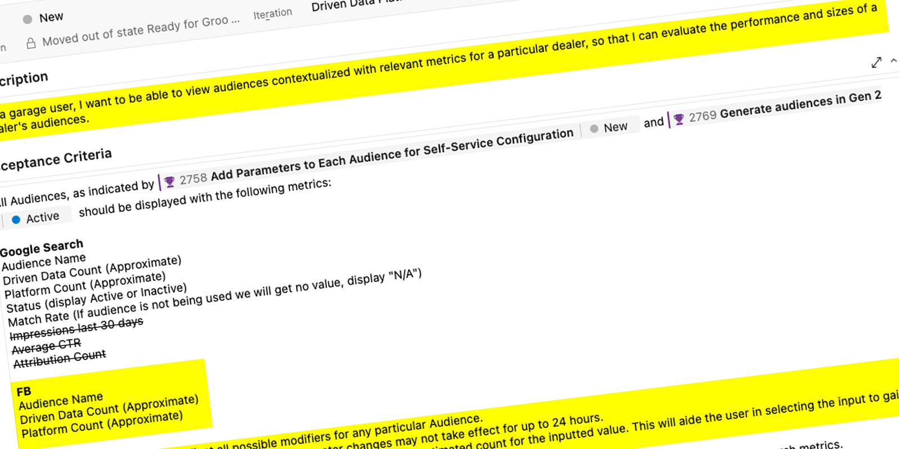
In short, internal users needed to be able to navigate to a client’s audiences, edit parameters about the audience, see how those changes would impact the audience, and know that changes would take place the following day.
1 Iteration #1
Simplify
“I want to be able to view audiences contextualized with relevant metrics for a particular dealer” is how the user story was written. What I hear is “the user needs to be able to navigate to a single dealer, access their audiences, and see how they’re performing”. That is how I approached building the UI.
I had a rough idea of what the single client page would look like, having previously designed an onboarding workflow. I had cards for each of the digital channels already in place. After some back-and-forth, I decided Audiences would be accessed through a configuration-like dropdown. I opted for opening a drawer.
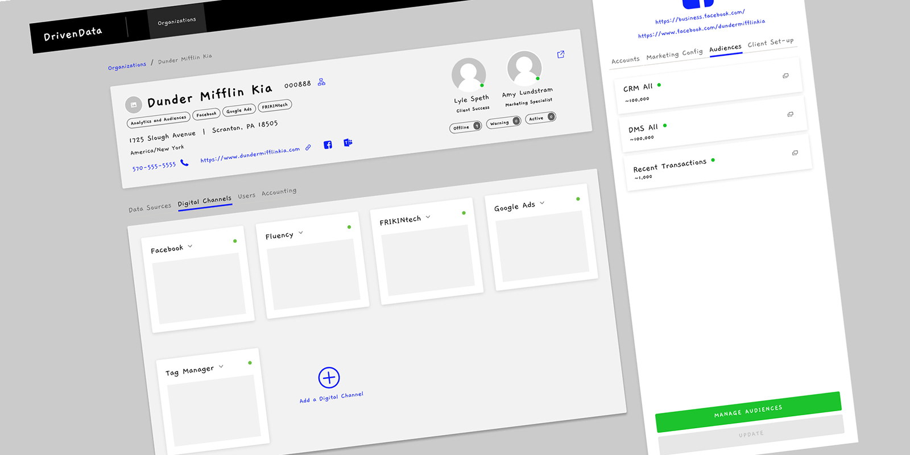
I presented these mock-ups at a Product Workshop meeting on January 11, 2022. These workshops were a chance for the Product Owner, Business Analyst, Engineering, and UX to get on the same page.
Align
The workflow started to come together in my head. A user would navigate to a single client, select the digital channel, open the drawer for additional information, and click on the correct audience. That would open a modal where users could view metrics or change parameters for that audience. The next step was building all of that in Figma.
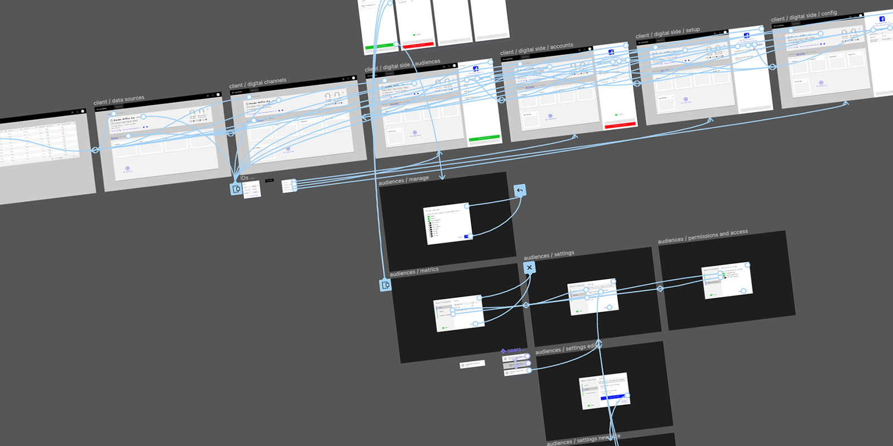
This is where I’m kicking myself for not leaving Sketch sooner. Prototypes with hover-states and animations are more representational. With my low fidelity workflow in place, I began to write a test script… knowing the participants would be seeing this tool for the first time.
Validate
Going back to the user story… I highlighted the requirements I wanted to validate. They were:
- A user can navigate to the audiences
- A user can modify the parameters of an audience
- The user would know the results of that modification
- The user would know the modifications wouldn’t be pushed until the next day
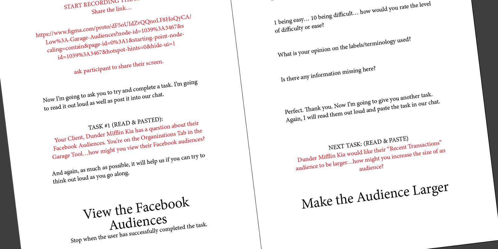
The Script
I split the requirements into two tasks… “how might you view a Facebook audience?” and “how might you increase the size of an audience?“ I ask the participants to think out loud as much as possible, and end each task with a series of follow-up questions.
I scheduled five interviews for January 24-25, 2022. One participant had to reschedule our meeting for January 31st.
Diagnosing Painpoints
Testing your own designs is always humbling. Things that seem completely obvious to you (the designer) can be easily overlooked by the users. Watching users struggle is a very helpless feeling… and you know you’re the reason for their struggles.
Here is a short video (1:35) of the sessions.
Readout
After a round of testing, I like to create a readout documentlaunch. I look at the time-on-task by the participants, look for commonality in their responses, document my findings, and make my recommendations for next steps. I presented my findings on February 1, 2022.
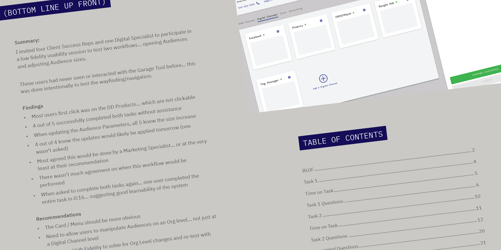
I was able to validate a few requirements. All five participants knew they increased the audience by 300 people. All four of the participants who were asked knew their change would take effect the next day.
Making the card menu more obvious to the users was my top priority. I also wanted to address users who kept trying to click on the informational chips in the hero. These were relatively minor issues but were causing the users issues.
2 Iteration #2
Swapping Libraries
Moving to a higher fidelity prototype was as simple as creating a duplicate of the file and using Figma’s “Swap Library” feature. What used to take me hours (or days) can now be done in minutes.
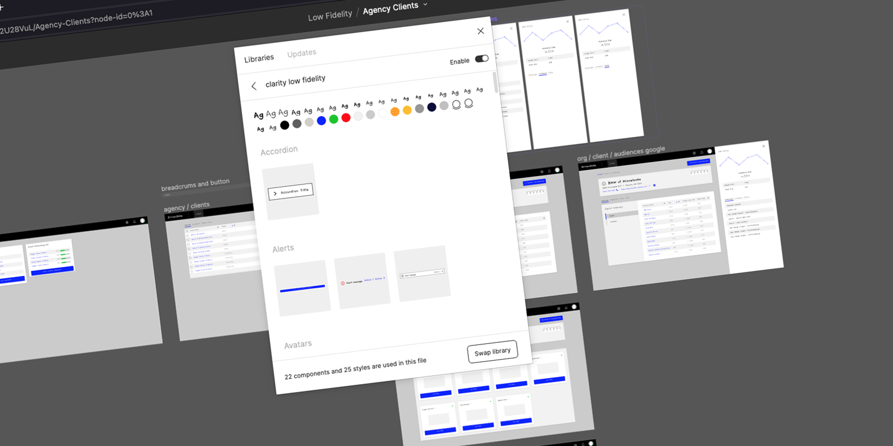
Implementing the Insights Gained
By moving to a higher fidelity, my goal was to improve the time and accuracy of accessing these audiences. Putting the menu behind the Settings Cog slowed users down. Users were also slowed down by the “chip” or “label” component. The intention was to show the user the services this client had purchased. All five participants thought they were buttons.
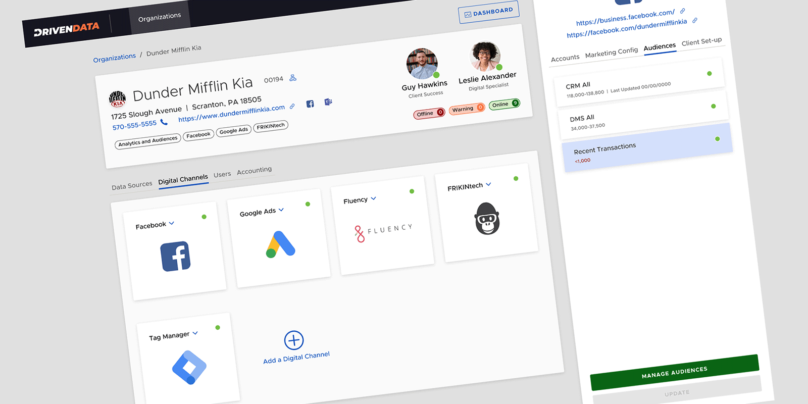
To make the menu more obvious, I moved the status indicator to the rightside of the card and added a dropdown/chevron to the title. I hoped the high fidelity chips looked less like buttons… but I also moved them to the bottom of the hero to downplay their prominence.
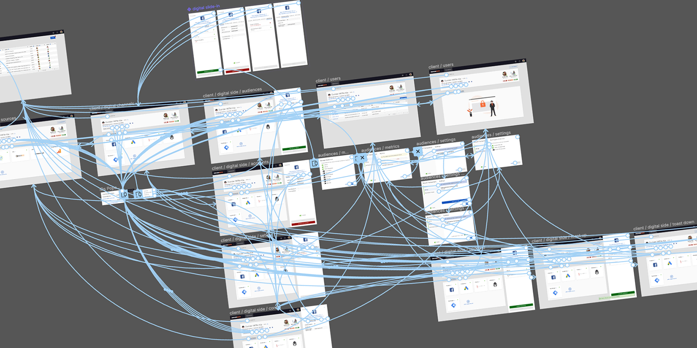
To make the high fidelity prototype more “life like”, I added a few more screens. This would be the users’ first interactions with a high fidelity design and I wanted to allow for exploration and questions.
Validate
Having already validated some of the user story, my goal was to improve the speed and accuracy of opening audiences. This script was only one task, being a combination of the tasks performed at a lower fidelity. I conducted these five sessions February 8-9, 2022.
System Usability Scale (SUS)
I ended the high fidelity session by having the participants fill out a System Usability Scale launch survey. I built the SUS survey in Google Forms as well as a SUS grader in Google Sheets… essentially automating the results.
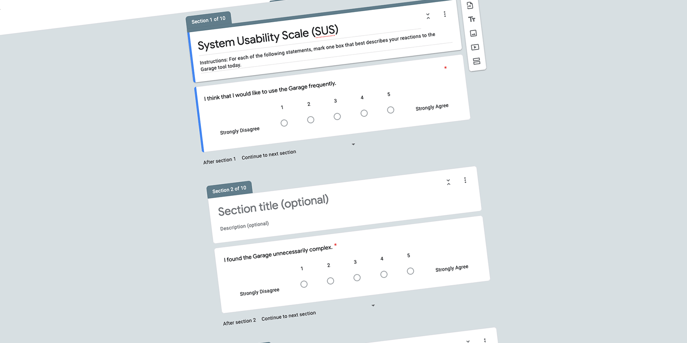
SUS Results
The average SUS score is 68. Anything over that is considered ‘above average’. With a final SUS score of 84, this prototype scored in the 90-95 percentile range with an ‘Excellent’ grade. I was very pleased with these results.
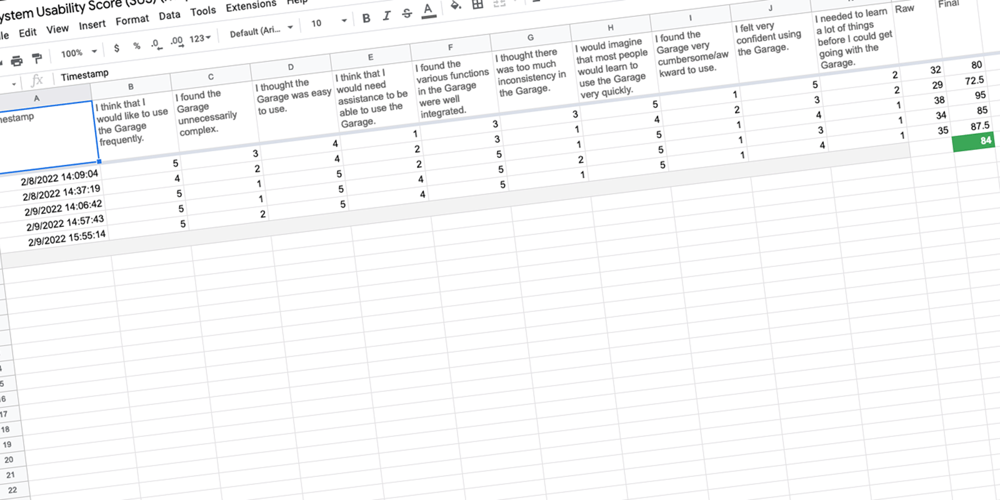
Results
This single task took a minimum of 8 clicks to complete… the average time was under 1-minute. While a priority, this was a ‘sometimes’ workflow… not something that needed to be more prominent. With the speed and accuracy improvements, along with the 84 SUS score, I consider this design concept complete. I presented these findingslaunch on February 10, 2022.
Takeaways…
This story… really a feature… was first brought to my attention on December 15, 2021. By January 11, 2022, I had received buy-in from Product and Software Engineering on the direction. In one month’s time, I was able to build and test a low fidelity prototype, incorporate those findings into a high fidelity prototype… test again… and deliver a solution with an 84/Excellent SUS score.
Software Engineering will be building something that was validated by users twice. My goal is to validate it again after it is released, and conduct another SUS survey at that time.
Things I Learned
- New tools: Figma, Whimsical, DaVinci Resolve
- Faster iterations by cloning my library to create a low fidelity version
- Setting up and running the System Usability Scale
The Launch
Audiences are scheduled to launch in Q2 2022.